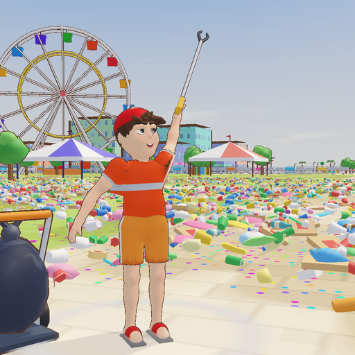
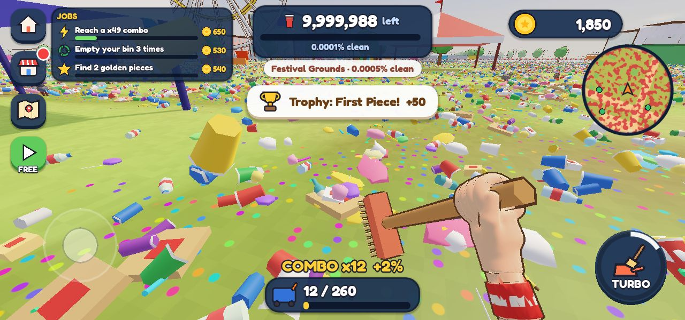
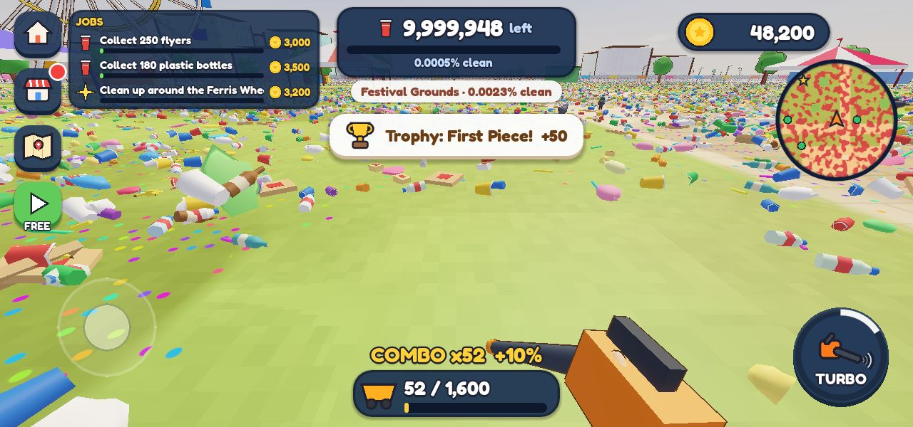
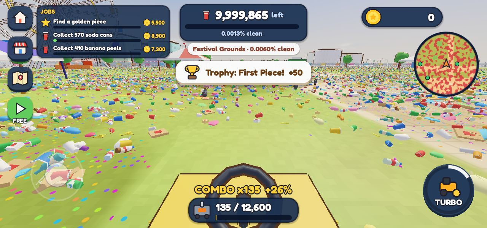
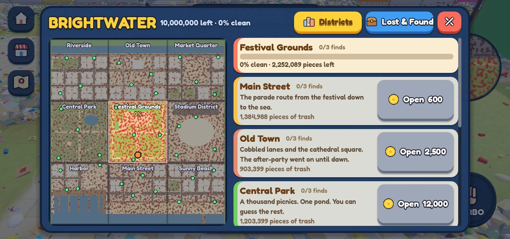

Last night the city of Brightwater threw the biggest festival in its history. This morning there are 10,000,000 pieces of trash on its streets, and you're the only one who can clean it.




Free to play. Ads are optional: you can watch a short video for a bonus (double speed, double coins and more), and that's the only time you'll see one.